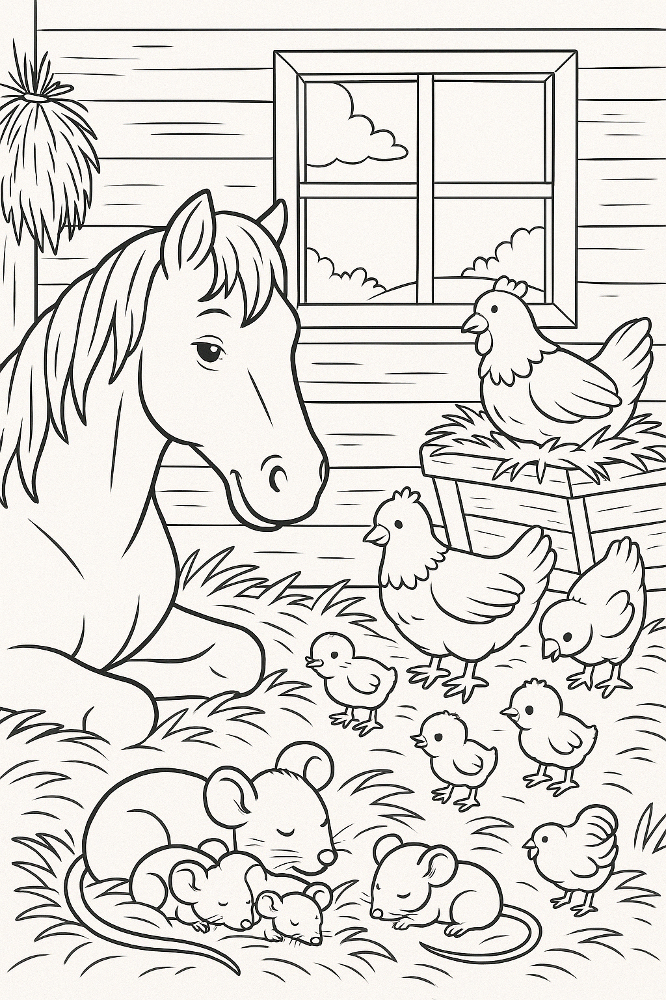
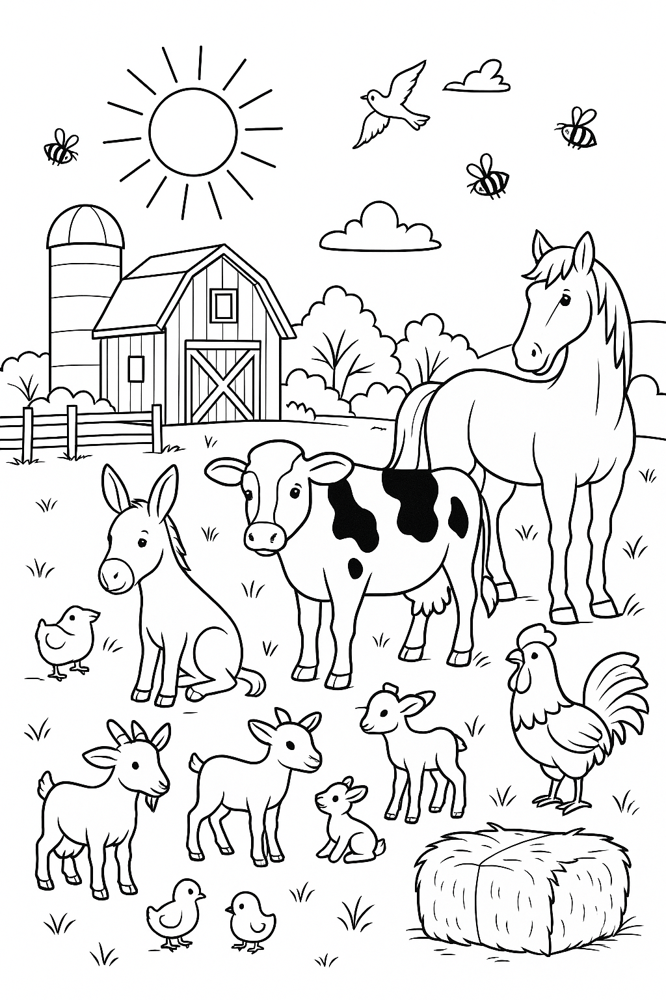
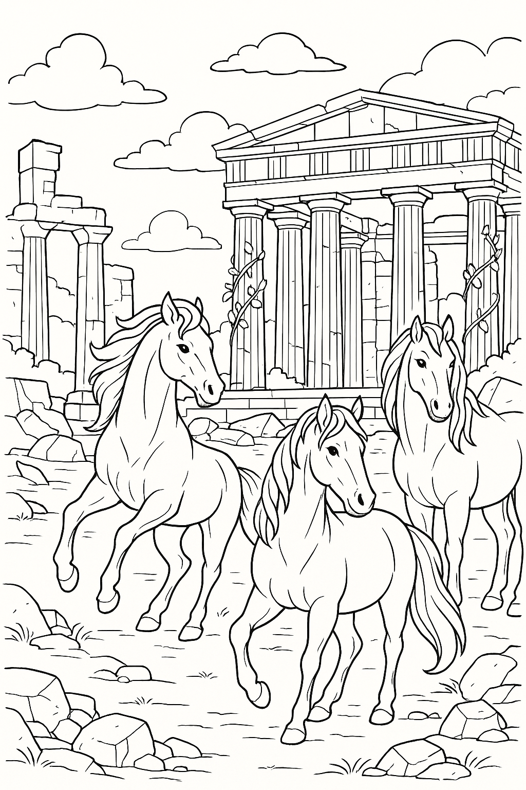
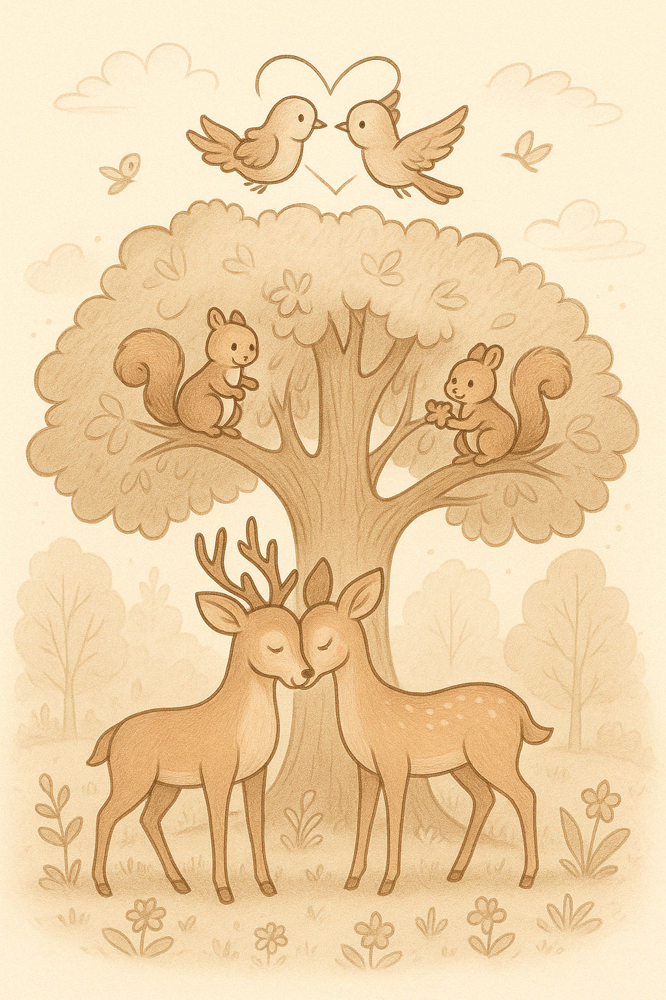
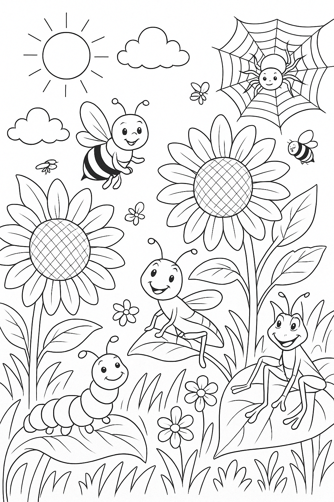
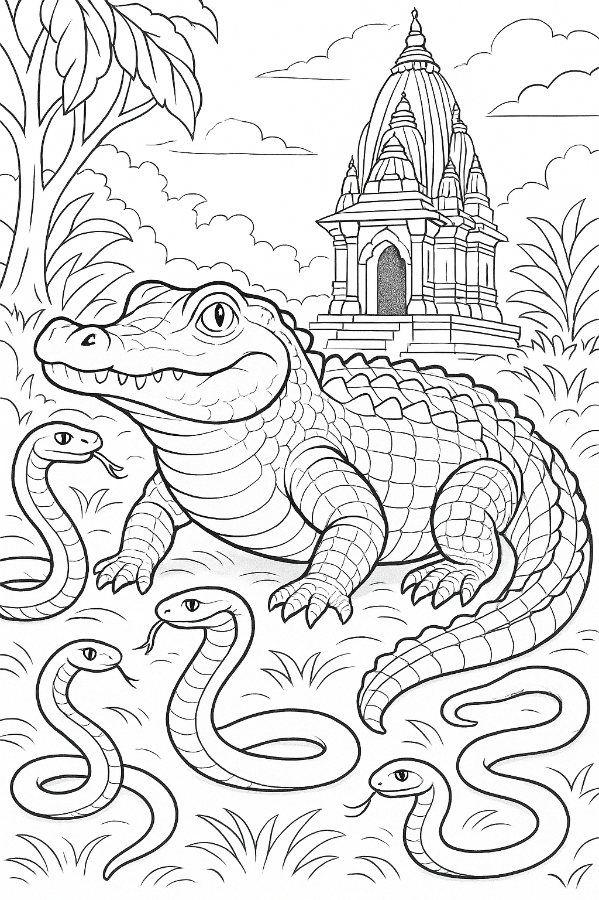

Vroeg in de Stal
Het paard wordt langzaam wakker, de kippen zijn al wakker... maar de muizen slapen nog knus bij elkaar in het stro
Zonnige dag op de Boerderij
Op de boerderij schijnt de zon vandaag in volle glorie. Alle dieren ontmoeten en begroeten elkaar bij het hooi.
Paarden in de Griekse Ruïnes
Vlak bij een eeuwenoude Griekse ruïne leven drie wilde paarden vrij door het landschap. Een beeld vol kracht en tijdloze schoonheid.
De Liefdesboom
Hoog in de boom zitten 2 vogeltjes, 2 eekhoorns en daaronder 2 hertjes dichtbij elkaar - want in het bos bloeit ook liefde.
Kijk, zoveel kleine beestjes!
Een mier, een sprinkhaan, bijtjes, een rups, vlinders en een spin... kom maar kijken wat ze doen hier!
Bij de Tempel van Dieren
Slangen en een Krokodil rusten bij de oude temple. In stilte laten ze zien: ook krachtige dieren kunnen kalm zijn.